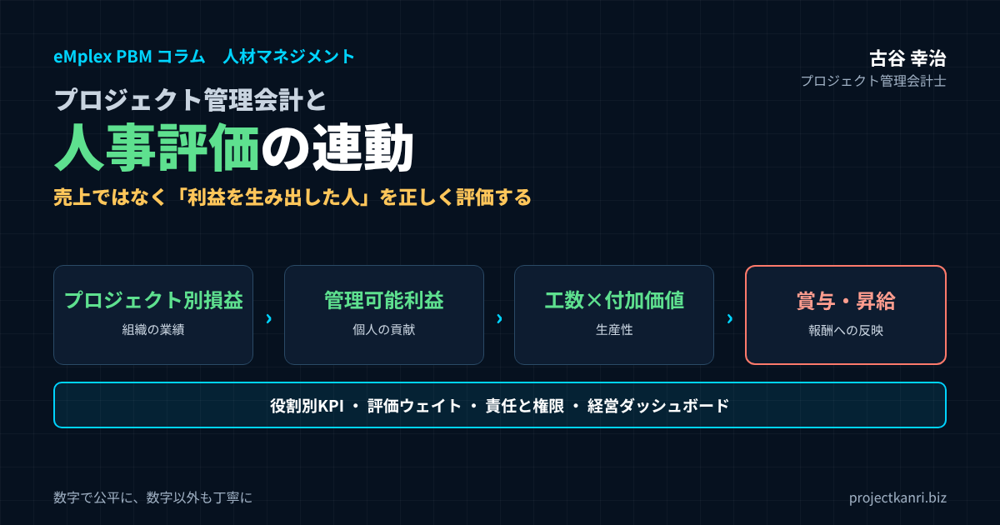

プロジェクト管理会計と人事評価とは？利益貢献を可視化する仕組みと評価制度の設計方法―プロジェクト別損益・管理可能利益・投入工数による公平な業績評価、KPIと評価ウェイト、賞与・昇給への反映、経営ダッシュボードまで

結論：売上を上げた人ではなく、利益を生み出した人を正しく評価する
この記事のポイント
- 売上を上げた人ではなく、利益を生み出した人を正しく評価する
- 組織の業績はプロジェクト別損益で、個人の貢献は本人がコントロールできる「管理可能利益」で評価する
- 生産性は投入工数と付加価値で測る。労務費は標準単価で計算し、責任と権限を一致させる
- 役割別のKPIと評価ウェイト、予算の甘さ・案件の運を調整するルールをセットで設計する
- 短期の業績は賞与に、継続的な成長は昇給に。経営ダッシュボードで期中から数字を共有する
プロジェクト管理会計士の古谷です。プロジェクト型ビジネスの会社で、プロジェクト別の損益を見える化するお手伝いをしていると、必ずといってよいほど、次のような声が出てきます。「この数字を、人事評価に使えないだろうか」。プロジェクトごとの利益が見えるようになると、誰が会社の利益に貢献しているのかも、見えてくるからです。
一方で、数字が見えるようになった途端に、驚くような事実が明らかになることもあります。社内で「エース」と呼ばれ、毎年大きな売上をあげていた営業担当者の案件が、労務費と外注費を差し引くと、ほとんど利益を残していなかった。逆に、目立たない中規模の案件を淡々とこなしていたプロジェクトマネージャーのチームが、会社の利益の大きな部分を稼いでいた。こうした「売上の評価」と「利益の実態」のずれは、プロジェクト型ビジネスではよく起こります。
本記事でお伝えしたいのは、売上を上げた人を評価するのではなく、利益を生み出した人を正しく評価する、という考え方です。そのために、組織の業績はプロジェクト別損益で把握し、個人の貢献は本人がコントロールできる範囲の利益、つまり管理可能利益で評価し、生産性は投入工数と付加価値で測り、その成果を賞与、昇給、インセンティブに反映し、経営ダッシュボードで組織と個人の成果を見える化する。この一連の流れを、制度として設計する方法を解説します。
ただし、最初にお断りしておきたいのは、数字だけで人を評価してはいけない、ということです。管理会計の数字は、評価を客観的で公平なものにするための強力な材料ですが、人の成長や行動、チームへの貢献まで、すべてを表すことはできません。数字で評価すべき部分と、数字以外で評価すべき部分を分けて設計することが、制度を機能させるための前提になります。
プロジェクト管理会計とは
プロジェクト管理会計とは、会社の売上、原価、利益を、プロジェクトという単位で把握し、経営の意思決定に活かすための管理会計の仕組みです。財務会計が、会社全体の業績を外部に報告するための会計であるのに対し、管理会計は、社内の経営判断のための会計です。そのなかでもプロジェクト管理会計は、システム開発、コンサルティング、建設、映像制作、イベントなど、仕事がプロジェクト単位で進む会社のための管理会計といえます。
プロジェクト管理会計の中心にあるのは、プロジェクト別損益です。プロジェクトごとに、売上と、労務費、外注費、直接経費などの原価を集計し、粗利益と粗利率を把握します。さらに、プロジェクトの予算と実績を比較し、着地見込みを予測することで、赤字になりそうなプロジェクトに早めに手を打つことができます。
プロジェクト型ビジネスの原価の大部分は、人の時間です。そのため、プロジェクト管理会計では、社員が各プロジェクトにどれだけの時間を使ったのかを、タイムシートで記録し、その工数に時間単価を掛けて労務費を計算します。この工数のデータこそが、プロジェクト管理会計と人事評価をつなぐ鍵になります。誰が、どのプロジェクトに、どれだけの時間を投じ、その結果どれだけの利益が生まれたのか。これが分かるようになると、組織と個人の貢献を、数字で語れるようになるのです。
| 区分 | 目的 | 主な単位 | 人事評価との関係 |
|---|---|---|---|
| 財務会計 | 外部への業績報告 | 会社全体 | 会社全体の賞与原資の目安 |
| 管理会計 | 社内の経営判断 | 事業・部門 | 部門長の業績評価 |
| プロジェクト管理会計 | プロジェクト単位の採算管理 | プロジェクト・工数 | PM・営業・メンバーの貢献の把握 |
プロジェクト管理会計の数字を人事評価に使うときに見落とされがちなのが、プロジェクト以外の時間の扱いです。社内の会議、研修、提案活動、社内の仕組みづくりなど、売上に直接つながらない時間も、タイムシートで区分して記録しておくと、稼働率を正しく計算できるだけでなく、こうした時間に貢献している人を把握することもできます。プロジェクト以外の仕事に時間を使っている人が、プロジェクトの数字だけで評価されて不利にならないようにするためにも、時間の区分は大切です。
人事評価制度とプロジェクト管理会計の関係
人事評価制度は、一般に、業績評価、能力評価、行動評価の三つの要素で構成されます。業績評価は、一定期間にどのような成果をあげたかを評価するものです。能力評価は、職務を遂行するために必要な知識やスキルをどの程度身につけているかを評価するものです。行動評価は、成果につながる行動をどの程度とっているかを評価するもので、コンピテンシー評価と呼ばれることもあります。
プロジェクト管理会計が最も直接的に役立つのは、このうちの業績評価です。プロジェクト別損益、予算達成率、粗利率、投入工数といった数字は、業績評価の客観的な根拠になります。これまで上司の印象に頼りがちだった業績評価に、数字の裏付けを与えることができます。
一方で、能力評価や行動評価にも、プロジェクト管理会計の数字は間接的に役立ちます。たとえば、見積の精度が高いプロジェクトマネージャーは、計画を立てる能力が高いと考えられます。予算と実績の差異が小さく、差異が出たときに早めに報告している人は、リスクを管理する行動がとれていると考えられます。数字そのものを点数にするのではなく、数字を、能力や行動を評価するときの事実として使うのです。
このように、プロジェクト管理会計は、業績評価の「何を」評価するかを明確にし、能力評価や行動評価の「なぜそう評価したのか」を説明するための材料になります。人事評価制度とプロジェクト管理会計は、別々の仕組みではなく、組み合わせることで、評価の客観性と納得性を高め合う関係にあります。
| 評価要素 | 評価する内容 | 管理会計の数字の使い方 |
|---|---|---|
| 業績評価 | 一定期間の成果 | 粗利益・予算達成率・粗利率を直接の根拠にする |
| 能力評価 | 知識・スキルの水準 | 見積精度などを計画能力の事実として使う |
| 行動評価 | 成果につながる行動 | 予実差異の早期報告などを行動の事実として使う |
なぜ従来の人事評価では不十分なのか
多くの会社の人事評価には、プロジェクト型ビジネスにとって、いくつかの共通する問題があります。
一つ目は、売上偏重です。営業担当者の評価が受注金額や売上高だけで決まっていると、利益の薄い案件でも、とにかく大きな案件を取りにいく行動が生まれます。値引きをしてでも受注し、その後の追加工数は現場が吸収する。こうして、営業の評価は高いのに、会社の利益は残らない、という状態になります。
二つ目は、主観的な評価です。プロジェクトの成果が数字で見えていないと、評価は上司の印象に左右されます。上司の目に触れやすい仕事をしている人や、報告のうまい人が評価されやすく、黙々と成果を出している人は見落とされがちです。評価される側も、なぜその評価なのかが分からず、評価への納得感が失われます。
三つ目は、プロジェクトと組織のずれです。多くの会社の人事評価は、部や課といった組織の単位で行われます。しかし、プロジェクト型ビジネスでは、社員は組織を越えて複数のプロジェクトに関わり、日々の仕事の指示はプロジェクトマネージャーから受けています。評価をする上司が、部下の実際の仕事ぶりをほとんど見ていない、ということが起こります。
四つ目は、見えない貢献です。赤字になりかけたプロジェクトを立て直した人、後輩の育成に時間を使った人、社内の仕組みの改善に取り組んだ人。こうした貢献は、売上や受注金額には表れません。むしろ、立て直しを任された人は、赤字のプロジェクトに関わったために、数字の上では悪く見えることさえあります。
これらの問題を解決するためには、売上ではなく利益で、印象ではなく事実で、組織の単位だけでなくプロジェクトの単位で、そして数字だけでなく数字に表れない貢献も含めて、評価する仕組みが必要です。プロジェクト管理会計は、その土台となる数字を提供します。
| 従来の問題 | 起きること | 解決の方向 |
|---|---|---|
| 売上偏重 | 値引き受注・利益なき成長 | 粗利益・利益貢献度で評価 |
| 主観的な評価 | 印象と報告の上手さで評価が決まる | プロジェクト別損益と工数を事実として使う |
| 組織とプロジェクトのずれ | 上司が実際の仕事を見ていない | PMによる評価と工数による加重平均 |
| 見えない貢献 | 立て直し・育成・改善が評価されない | スタート地点の調整と定性評価 |
数値例：売上で見るか、利益で見るかで評価は逆転する
冒頭でお話しした「売上の評価」と「利益の実態」のずれを、架空の数値例で確認してみましょう。ある会社に、営業担当者のAさんとBさんがいるとします。Aさんは年間で大型案件を中心に1億2,000万円を受注し、Bさんは中規模の案件を中心に6,000万円を受注しました。受注金額で評価すれば、Aさんの評価はBさんの2倍です。
| 項目 | Aさん | Bさん |
|---|---|---|
| 受注金額 | 1億2,000万円 | 6,000万円 |
| 値引き・追加工数 | 大幅値引き、追加工数が多い | 適正価格、範囲が明確 |
| 粗利率 | 10% | 35% |
| 粗利益 | 1,200万円 | 2,100万円 |
| 受注金額での評価 | 高い | 普通 |
| 粗利益での評価 | 普通 | 高い |
ところが、案件が完了した後の粗利益を見ると、結果は逆転します。Aさんの案件は、大幅な値引きで受注したうえに、仕様が曖昧なまま契約したために追加の工数がかさみ、粗利率は10%、粗利益は1,200万円にとどまりました。一方、Bさんの案件は、適正な価格で、範囲を明確にして受注したために、粗利率は35%、粗利益は2,100万円になりました。会社の利益への貢献は、Bさんのほうが大きかったのです。
さらに、Aさんの案件では、追加の工数を吸収するために、現場のメンバーが長時間の残業を強いられ、ほかのプロジェクトの進行にも影響が出ていたかもしれません。こうした影響は、Aさんの受注金額には表れません。
この例が示すのは、評価の指標が、社員の行動を決める、ということです。受注金額で評価される会社では、社員は受注金額を最大にしようとします。粗利益で評価される会社では、社員は利益の出る条件で受注しようとします。どちらの行動が会社にとって望ましいかは、明らかでしょう。プロジェクト管理会計を人事評価に取り入れる最大の意味は、社員の行動を、会社の利益と同じ方向に向けることにあります。
プロジェクト別採算管理の仕組み―売上から営業利益まで
人事評価にプロジェクト管理会計を活かすためには、まず、プロジェクト別の採算を正しく把握する仕組みが必要です。ここでは、プロジェクト別損益の基本的な構造を確認しておきます。
プロジェクトの売上から、そのプロジェクトのために直接かかった原価、つまり労務費、外注費、直接経費を差し引いたものが、プロジェクトの粗利益です。労務費は、タイムシートで記録した工数に時間単価を掛けて計算します。外注費は、協力会社や業務委託先に支払った費用です。直接経費は、出張旅費や、そのプロジェクトのために購入したソフトウェアなど、プロジェクトに直接ひもづく費用です。
プロジェクトの粗利益を部門ごとに合計し、そこから部門の固定費、たとえば部門長の人件費や、部門で使う設備やツールの費用を差し引くと、部門の貢献利益になります。さらに、本社の管理部門の費用などの共通費を配賦すると、部門の営業利益になります。
人事評価で大切なのは、どの段階の利益を、誰の評価に使うのかを決めることです。プロジェクトの粗利益は、プロジェクトマネージャーの評価に使えます。部門の貢献利益は、部門長の評価に使えます。一方で、共通費を配賦した後の営業利益は、配賦の方法によって数字が大きく変わり、部門長や個人がコントロールできない要素を含みますので、個人の評価にそのまま使うのは避けるべきです。この考え方が、次に説明する管理可能利益です。
| 利益の段階 | 計算 | 主に評価に使う対象 |
|---|---|---|
| プロジェクト粗利益 | 売上－労務費－外注費－直接経費 | プロジェクトマネージャー |
| 部門貢献利益 | プロジェクト粗利益の合計－部門固定費 | 部門長 |
| 部門営業利益 | 部門貢献利益－共通費配賦額 | 参考情報（個人評価には使わない） |
なお、プロジェクト別損益を人事評価に使うのであれば、数字の正確さがこれまで以上に重要になります。工数の入力漏れや、他のプロジェクトへの付け替えがあると、評価そのものが歪みます。タイムシートの入力を期限どおりに行うこと、工数の付け替えには承認を必要とすること、月次で締めた後の数字は書き換えられないようにすること。こうした数字の信頼性を守る仕組みが、評価の公平性を支えます。
数字の信頼性を高めるうえでは、評価の対象者自身が、数字の集計に関わりすぎないことも大切です。プロジェクトマネージャーが自分のプロジェクトの原価を自由に付け替えられる状態では、評価の数字への信頼は生まれません。工数の承認、原価の計上、月次の締めといった処理の権限を、役割に応じて分けておくことで、数字の客観性が保たれます。
管理可能利益と「責任と権限」―評価は本人がコントロールできる範囲で
プロジェクト管理会計を人事評価に活かすうえで、最も重要な考え方が、管理可能利益です。管理可能利益とは、評価の対象となる人や組織が、自らの判断でコントロールできる収益と費用だけで計算した利益のことです。
評価の大原則は、本人がコントロールできないことで、本人を評価しないことです。たとえば、本社の家賃が上がったことで部門の営業利益が下がったとしても、それは部門長の責任ではありません。全社で決めた昇給によって労務費の時間単価が上がり、プロジェクトの粗利益が下がったとしても、それはプロジェクトマネージャーの責任ではありません。こうした要素を含んだ利益で評価すると、評価される側は「自分ではどうしようもないことで評価が下がった」と感じ、評価への納得感は失われます。
管理可能利益の考え方は、責任と権限の一致という原則と表裏一体です。プロジェクトマネージャーに利益の責任を求めるのであれば、そのプロジェクトのメンバーの構成や、外注先の選定、追加の要望を有償にするかどうかの交渉といった、利益に影響する判断をする権限も与える必要があります。権限を与えずに責任だけを求めるのは、公平ではありません。逆に、権限を持っているのに責任を問われないのであれば、判断が甘くなります。
実務では、役割ごとに、どの収益と費用をコントロールできるのかを整理し、評価に使う利益の範囲を決めます。次の表は、その一つの例です。
| 役割 | コントロールできる主な項目 | コントロールできない主な項目 |
|---|---|---|
| プロジェクトマネージャー | 投入する等級・工数、外注の範囲、追加要望の有償化 | 全社の昇給による単価変動、本社費 |
| 営業担当者 | 受注単価、契約条件、受注時の見込み粗利率 | 受注後の現場の生産性 |
| 部門長 | 部門の人員構成、部門固定費、案件の選択 | 本社費の配賦額、全社方針による人員配置 |
| メンバー | 担当作業の工数・品質・期限 | 受注単価、メンバー構成 |
ここで注意したいのは、時間単価の扱いです。労務費の時間単価に、個々の社員の実際の給与を使うと、給与の高いベテランをプロジェクトに入れるほど、プロジェクトの粗利益が下がります。その結果、プロジェクトマネージャーはベテランを避け、若手ばかりを入れるようになるかもしれません。評価に使う労務費は、等級や職種ごとの標準単価で計算するのが一般的です。標準単価を使えば、プロジェクトマネージャーがコントロールできるのは、どの等級の人を何時間投入するかという部分だけになり、評価の公平性が保たれます。
また、管理可能利益の考え方は、評価の対象期間にも当てはまります。プロジェクトが評価の期をまたぐ場合、期末の時点ではまだ利益が確定していません。進行中のプロジェクトは、期末時点の進捗に応じた粗利益と、着地見込みの精度で評価し、完了した時点で確定した利益との差を、次の期の評価で調整する、といったルールを決めておきます。長期のプロジェクトほど、このルールが重要になります。
役割別の評価指標―PM・営業・メンバー・部門長・管理部門
プロジェクト型ビジネスでは、役割によって、会社の利益への関わり方が異なります。そのため、評価に使う指標も、役割ごとに設計する必要があります。
プロジェクトマネージャーは、プロジェクトの利益に最も直接的な責任を持つ役割です。評価の中心となるのは、プロジェクトの粗利益と粗利率、予算に対する実績、そして見積と実績の差です。加えて、顧客満足度や、メンバーの育成、リスクの早期報告なども評価します。
営業担当者は、受注の量と質に責任を持つ役割です。受注金額だけでなく、受注時の見込み粗利率、つまり、利益の出る条件で受注できたかどうかを評価に入れることが大切です。さらに、受注した案件が実際にどれだけの粗利益を残したかを、営業担当者の評価にも一定の割合で反映させると、無理な値引きや、曖昧な条件での受注が減ります。
プロジェクトのメンバーは、自分の担当する作業を、品質と期限を守って遂行することに責任を持ちます。メンバーの評価に、プロジェクトの利益をそのまま使うのは適切ではありません。メンバーは、プロジェクトの利益を左右する判断の権限を持っていないことが多いからです。メンバーの評価では、担当した作業の見積工数と実績工数の差、稼働率、品質、スキルの向上などを中心に評価します。
部門長は、部門全体の利益と、部門の人材に責任を持つ役割です。部門の貢献利益、部門の稼働率、一人当たり付加価値、そして部下の育成や定着を評価します。管理部門のように売上を持たない部門は、利益で評価することができません。予算の範囲内での費用の管理、月次決算の早期化や業務改善といった、部門の役割に応じた指標で評価します。
| 役割 | 定量評価の指標 | 定性評価の観点 |
|---|---|---|
| プロジェクトマネージャー | 粗利益・粗利率、予算達成率、見積と実績の差 | 顧客満足、メンバー育成、リスクの早期報告 |
| 営業担当者 | 受注額、受注時見込み粗利率、完了時粗利益 | 顧客との関係構築、条件交渉の質 |
| メンバー | 見積工数と実績工数の差、稼働率 | 品質、スキルの向上、チームへの協力 |
| 部門長 | 部門貢献利益、稼働率、一人当たり付加価値 | 部下の育成・定着、部門間の協力 |
| 管理部門 | 予算内の費用管理、月次決算の日数 | 業務改善、他部門への支援 |
個人の貢献をどう測るか―投入工数・付加価値・利益貢献度
プロジェクト型ビジネスで、個人の貢献を数字で測るときに使えるのが、投入工数と付加価値です。
まず、投入工数です。タイムシートで記録した工数から、一人ひとりが、どのプロジェクトにどれだけの時間を投じたのかが分かります。ここから、稼働率、つまり、所定の労働時間のうち、売上につながるプロジェクトの作業に使った時間の割合を計算できます。稼働率は、個人の生産性を表す基本的な指標です。ただし、稼働率は、本人の努力だけでなく、アサインされる案件の有無にも左右されますので、評価に使う際には、その点を考慮する必要があります。
次に、付加価値です。プロジェクト型ビジネスでは、売上から外注費や仕入などの外部に支払った費用を差し引いたものを、付加価値と考えることができます。この付加価値を、プロジェクトに投じた工数で割ると、一時間当たりの付加価値が分かります。さらに、部門や会社全体の付加価値を人数で割ったものが、一人当たり付加価値です。一人当たり付加価値は、組織の生産性を表す代表的な指標であり、給与水準を考えるうえでも重要です。
そして、利益貢献度です。複数のプロジェクトに関わる個人の、利益への貢献を見るために、各プロジェクトの粗利益を、そのプロジェクトに投じた工数の割合で各メンバーに按分する、という方法があります。たとえば、粗利益1,000万円のプロジェクトに、全体の30%の工数を投じた人には、300万円の利益貢献があった、と考えるのです。
| メンバー | Aの工数割合 | Bの工数割合 | 利益貢献度の目安 |
|---|---|---|---|
| Aさん | 30% | 0% | 300万円 |
| Bさん | 20% | 50% | 400万円（200＋200） |
| Cさん | 50% | 50% | 700万円（500＋200） |
工数割合での按分は目安です。評価の点数として機械的に使わず、面談で一年間の仕事を振り返る事実として使います。
ただし、この按分の方法は、あくまでも一つの目安です。工数の割合で按分すると、たくさん時間を使った人ほど貢献度が高くなりますが、短い時間で難しい問題を解決した人の貢献は、正しく表れません。また、赤字のプロジェクトを立て直すために入った人は、マイナスの貢献度を割り当てられてしまいます。利益貢献度は、評価の点数として機械的に使うのではなく、評価の面談で、その人の一年間の仕事を振り返るための事実として使うのが適切です。
プロジェクトマネージャーの評価シートの例
ここまでの考え方を、プロジェクトマネージャーの評価シートの形にまとめると、たとえば次のようになります。評価項目ごとに、評価に使う数字と、評価の基準、ウェイトを明確にしておくことで、評価者によるばらつきを小さくし、評価される側にとっても、何を目指せばよいのかが分かりやすくなります。
| 評価項目 | 使う数字・事実 | 評価の基準の例 | ウェイト |
|---|---|---|---|
| プロジェクト粗利益 | 担当プロジェクトの粗利益合計 | 目標に対する達成率 | 25% |
| 粗利率 | 担当プロジェクトの平均粗利率 | 目標粗利率との差 | 10% |
| 見積精度 | 見積工数と実績工数の差 | 差異が一定の範囲内か | 10% |
| 予実差異の報告 | 差異の報告の時期と内容 | 基準を超えた差異を速やかに報告したか | 5% |
| 顧客満足 | 顧客の評価、継続受注 | 継続受注・紹介の有無 | 15% |
| メンバー育成 | 育成目的のアサイン、メンバーの成長 | 育成計画の実行状況 | 15% |
| 行動評価 | リーダーシップ、協力、改善 | 行動基準に照らした評価 | 20% |
ウェイトは一例です。業績評価（上の4項目）は計50%、それ以外は計50%としています。
この評価シートのポイントは、粗利益という結果だけでなく、見積の精度、予実差異の報告、メンバーの育成といった、結果につながるプロセスを評価項目に入れていることです。粗利益の結果は、案件の条件や外部の要因に左右されることもあります。しかし、プロセスの評価項目は、本人の行動によって確実に改善できます。結果とプロセスの両方を評価することで、運の良し悪しに左右されにくい、安定した評価になります。
また、評価の基準を、評価の期が始まる前に本人と共有しておくことが大切です。期末になってから評価の基準を知らされても、本人は行動を変えることができません。評価シートは、評価のための道具であると同時に、期初に「この一年で何を目指すのか」を確認するための道具でもあります。
営業の評価を「受注金額」から「利益」へ切り替えるときの進め方
営業担当者の評価を、受注金額中心から利益中心に切り替えることは、多くの会社にとって大きな変化です。急に切り替えると、営業担当者の反発を招いたり、受注そのものが減ってしまったりするおそれがあります。
お勧めしたいのは、段階的に切り替える方法です。最初の年は、受注金額の評価を中心に残しつつ、受注時の見込み粗利率を評価項目に加えます。次の年は、案件が完了した時点の粗利益も評価に加え、受注金額と粗利益の比率を半々にします。そして、その次の年に、粗利益を評価の中心に据える、という具合です。
同時に、営業担当者が利益を意識した受注をできるように、見積の段階で、案件の見込み粗利率を確認できる仕組みを整えます。過去の類似案件の実績の粗利率や、工数の実績が分かれば、営業担当者は根拠をもって価格を交渉できます。評価の指標だけを変えて、利益を判断するための情報を営業に渡さないのでは、営業担当者は困ってしまいます。評価の切り替えと、情報の提供は、必ずセットで行いましょう。
また、受注後の追加要望を有償の変更として扱えるよう、契約の段階で作業の範囲を明確にしておくことも、営業の重要な仕事です。範囲の明確な契約を結んだことを、営業担当者の評価の観点に加えると、現場のプロジェクトマネージャーとの協力関係も良くなります。
人事評価に活用するKPI―KGIから個人の目標まで
プロジェクト管理会計の数字を人事評価に使うときには、会社全体の目標から、部門、プロジェクト、個人の目標までを、一本の線でつなぐことが大切です。
出発点は、会社全体のKGI、つまり最終的に達成したい目標です。たとえば、「営業利益○億円」「営業利益率○%」といった目標です。このKGIを、部門の貢献利益や粗利益の目標に分解し、さらにプロジェクトごとの粗利益の目標、そして個人の稼働率や見積精度といったKPIに分解していきます。
この分解がきちんとできていれば、個人がKPIを達成することが、プロジェクトの目標の達成につながり、それが部門の目標、会社の目標の達成につながります。逆に、この分解ができていないと、個人は自分の目標を達成しているのに、会社の業績は上がらない、ということが起こります。
KPIを選ぶときのポイントは、三つあります。一つ目は、本人がコントロールできる指標であること。二つ目は、数を絞ること。一人の評価に十個以上のKPIを設定すると、どれが大切なのかが分からなくなります。役割ごとに、三つから五つ程度に絞るのが現実的です。三つ目は、結果を表す指標と、結果につながる行動を表す指標を、組み合わせることです。粗利益のような結果の指標だけでは、なぜ達成できたのか、なぜ達成できなかったのかが分かりません。見積精度や、予実差異の早期報告といった、プロセスを表す指標も組み合わせます。
| 階層 | 目標・指標の例 |
|---|---|
| 会社（KGI） | 営業利益、営業利益率 |
| 部門 | 部門貢献利益、粗利率、稼働率、一人当たり付加価値 |
| プロジェクト | プロジェクト粗利益、予算達成率、着地見込みの精度 |
| 個人（PM） | 担当プロジェクトの粗利益、見積精度、予実差異の早期報告 |
| 個人（メンバー） | 担当作業の工数差異、稼働率、品質指標 |
KPIの目標値を決めるときには、過去の実績を基準にすることが大切です。過去の実績がないまま目標を決めると、目標が高すぎて誰も達成できないか、低すぎて誰でも達成できるか、のどちらかになりがちです。プロジェクト管理会計で過去の数字が蓄積されていれば、現実的で、かつ挑戦しがいのある目標を設定できます。
評価ウェイトの設計―定量評価と定性評価のバランス
プロジェクト管理会計の数字を人事評価に取り入れるとき、多くの会社が悩むのが、定量評価と定性評価の比率、つまり評価ウェイトです。
定量評価の比率を高くすると、評価の客観性は高まります。一方で、数字に表れない貢献が評価されにくくなり、短期的な数字を追う行動が生まれやすくなります。定性評価の比率を高くすると、幅広い貢献を評価できますが、評価が主観に左右されやすくなります。
一つの考え方は、役割と等級によって、評価ウェイトを変えることです。利益に対する責任と権限が大きい役割ほど、定量評価の比率を高くし、育成段階にある若手社員ほど、能力評価や行動評価の比率を高くします。次の表は、その一例です。
| 等級・役割 | 業績評価（定量） | 能力評価 | 行動評価 |
|---|---|---|---|
| 部門長 | 60% | 20% | 20% |
| プロジェクトマネージャー | 50% | 25% | 25% |
| 中堅メンバー | 40% | 30% | 30% |
| 若手メンバー | 20% | 40% | 40% |
比率は一例です。自社の役割の定義と、責任と権限の大きさに合わせて設計します。
また、定量評価の中でも、絶対評価と相対評価のどちらを使うかを決めておく必要があります。プロジェクトの粗利益の予算達成率のように、あらかじめ決めた目標に対する達成度で評価するのが絶対評価です。同じ役割の人の中での順位で評価するのが相対評価です。プロジェクト型ビジネスでは、案件の難易度や規模がプロジェクトごとに大きく異なりますので、単純な相対評価は不公平になりがちです。目標に対する達成度を基本とし、案件の難易度を調整する仕組みを組み合わせるのが現実的です。
目標設定と予算の連動―MBO・OKRとプロジェクト予算
人事評価の目標設定には、MBO、つまり目標管理制度が広く使われています。期初に上司と部下が話し合って目標を決め、期末にその達成度を評価する仕組みです。また、近年では、挑戦的な目標を掲げて、組織全体で達成を目指すOKRを取り入れる会社もあります。
プロジェクト管理会計と人事評価を連動させるうえで大切なのは、MBOの目標と、会社の予算を一致させることです。人事評価の目標は人事部が、予算は経営企画部や経理部が、別々に決めている会社が少なくありません。その結果、個人の目標を合計しても、会社の予算に届かない、ということが起こります。期初の予算編成と、人事評価の目標設定を同じ時期に行い、予算の数字を、部門、プロジェクト、個人の目標に展開する流れをつくることが大切です。
一方で、OKRのような挑戦的な目標は、達成度をそのまま賞与に結びつけると、挑戦的な目標を立てる人がいなくなります。挑戦的な目標は、達成できなくても評価を下げない、あるいは挑戦の過程を評価する、という扱いにしておく必要があります。予算に連動する目標と、挑戦のための目標を、評価の上で分けて扱うのが現実的です。
また、プロジェクト型ビジネスでは、期の途中で新しいプロジェクトが始まったり、予定していたプロジェクトがなくなったりします。期初に決めた目標が、期の途中で意味を失うこともあります。そのため、四半期ごとに目標を見直す機会を設け、目標の変更を記録に残しておくことが大切です。目標の変更を、評価の公平性を損なわない形で行うためのルールを、あらかじめ決めておきましょう。
「予算の甘さ」と「案件の運」にどう対処するか
予算の達成度で評価する制度には、よく知られた落とし穴があります。予算を低く設定すれば、達成しやすくなり、評価が上がる、という問題です。評価が予算の達成度だけで決まると、期初の予算編成は、いかに低い目標を通すかという交渉の場になってしまいます。
この問題への対策は、いくつかあります。一つ目は、予算の達成度だけでなく、利益の絶対額や、前年からの改善幅も評価に入れることです。二つ目は、見積の精度そのものを評価することです。プロジェクトマネージャーの見積が毎回大幅に上振れするのであれば、それは見積が甘い、ということでもあります。見積と実績の差が小さいことを、計画能力として評価します。三つ目は、予算の水準を、部門の中だけで決めるのではなく、過去の実績や他の部門との比較を踏まえて、経営企画部門が確認することです。
もう一つの難しい問題が、案件の運です。プロジェクト型ビジネスでは、条件の良い案件にアサインされた人の数字は良くなり、難しい案件や、すでに赤字になりかけた案件にアサインされた人の数字は悪くなります。これをそのまま評価に反映すると、難しい案件を誰も引き受けたがらなくなります。
対策として有効なのは、アサインの時点で、案件の難易度や、引き継いだ時点の状態を記録しておくことです。赤字になりかけたプロジェクトを引き継いだのであれば、引き継いだ時点の着地見込みからどれだけ改善したかで評価します。いわば、スタート地点を調整して評価するのです。こうした調整のルールがあれば、難しい案件の立て直しを任された人が、正当に評価されるようになります。
| 歪みの原因 | 起きること | 調整ルールの例 |
|---|---|---|
| 予算の甘さ | 低い予算を通して達成率を上げる | 利益の絶対額・前年改善幅も評価、見積精度を評価 |
| 案件の運 | 良い案件の担当者だけが高評価 | アサイン時に難易度を記録 |
| 赤字案件の引き継ぎ | 立て直し役が低評価になる | 引き継ぎ時点の着地見込みからの改善幅で評価 |
| 育成目的のアサイン | 若手を入れると利益が下がる | 育成工数を事前に記録し別枠で扱う |
チームの成果と個人の評価―兼務・マトリクス組織での評価
プロジェクト型ビジネスでは、一人の社員が複数のプロジェクトを兼務することが珍しくありません。また、所属する部門の上司と、日々の仕事の指示を出すプロジェクトマネージャーが別の人である、いわゆるマトリクス組織になっていることも多いでしょう。このような組織で、誰が、どのように評価するのかを決めておく必要があります。
一つの方法は、プロジェクトマネージャーが、各メンバーのプロジェクトでの働きぶりを評価し、その評価を、所属部門の上司がまとめて最終的な評価を決める、という二段階の評価です。複数のプロジェクトを兼務している場合は、各プロジェクトマネージャーの評価を、そのプロジェクトに投じた工数の割合で加重平均します。工数のデータがあれば、この加重平均を客観的に行うことができます。
また、チームの成果をどこまで個人の評価に反映させるかも、決めておく必要があります。個人の成果だけで評価すると、チームの中での協力が生まれにくくなります。逆に、チームの成果だけで評価すると、貢献の少ない人も同じ評価になり、貢献の大きい人の不満が高まります。プロジェクトの成果を、チーム全体の評価として一定の割合で全員に反映しつつ、個人の貢献は、個人の目標の達成度や行動評価で差をつける、という組み合わせが現実的です。
| 評価者 | 工数割合 | 評価点（5点満点） | 加重後 |
|---|---|---|---|
| PM甲（プロジェクトA） | 60% | 4.0 | 2.4 |
| PM乙（プロジェクトB） | 30% | 3.0 | 0.9 |
| 部門の業務（部門長） | 10% | 4.0 | 0.4 |
| 合計 | 100% | － | 3.7 |
加重平均をもとに、所属部門の上司が最終評価を決めます。
なお、プロジェクトマネージャーによる評価には、評価者ごとの甘さや厳しさのばらつきが生じます。評価者の間で評価の基準をそろえるために、評価の前に、評価者が集まって評価の考え方をすり合わせる会議、いわゆる評価者会議を開くことをお勧めします。この会議で、プロジェクト別の数字を共有しながら議論すると、評価のばらつきは小さくなります。
評価を報酬に反映する―賞与・昇給・インセンティブ
評価の結果を、報酬にどのように反映させるかは、制度の中で最も慎重に設計すべき部分です。
一般に、短期の業績は賞与に、能力の伸びや役割の大きさは昇給や昇格に反映させる、という考え方がとられます。プロジェクト管理会計の数字は、主に一年間の業績を表しますので、賞与との相性が良いといえます。一方で、ある一年の業績が良かったからといって、基本給を大きく上げると、翌年に業績が下がったときに、給与と貢献のバランスが崩れます。昇給は、継続的な能力の伸びや、より大きな役割を担えるようになったことに対して行うのが基本です。
賞与の原資の決め方にも、プロジェクト管理会計の数字が使えます。会社全体、あるいは部門の利益に連動して賞与の原資を決め、その原資を個人の評価に応じて配分する、という方法です。会社の利益が増えれば賞与の原資も増え、利益が減れば原資も減る。この仕組みがあると、社員一人ひとりが、会社の利益と自分の報酬のつながりを実感できるようになります。
| 項目 | 金額・内容 |
|---|---|
| 部門貢献利益（実績） | 1億2,000万円 |
| 賞与原資の算定 | 基本原資3,000万円＋計画超過利益2,000万円×20%＝3,400万円 |
| 個人への配分 | 原資を、評価ランク別の係数×基本給で按分 |
| 評価ランク係数の例 | S：1.5／A：1.2／B：1.0／C：0.8／D：0.6 |
原資の算定方法と係数は一例です。業績が悪化した場合の下限なども、あらかじめ決めておきます。
インセンティブ、つまり特定の成果に対する報奨を導入する場合は、特に注意が必要です。受注金額に連動したインセンティブは、利益の薄い受注を増やすおそれがあります。インセンティブを設けるのであれば、受注金額ではなく、粗利益に連動させる、あるいは、プロジェクトが完了して利益が確定した時点で支払う、といった工夫が必要です。
また、評価制度や賃金制度を変更する際には、労働条件の不利益変更にあたらないかを確認する必要があります。労働契約法では、就業規則の変更によって労働条件を不利益に変更する場合には、変更の必要性や内容の相当性などに照らして合理的なものであることが求められます。制度の変更にあたっては、社会保険労務士や弁護士などの専門家に相談し、社員への丁寧な説明と、必要に応じた経過措置を検討してください。
賞与の配分を評価ランクで決める場合、ランクの分布をどうするかも決めておく必要があります。全員がA評価になってしまうと、評価の意味がなくなります。一方で、ランクの比率を厳格に固定すると、全員が目標を達成したチームでも、誰かを低い評価にしなければならなくなります。プロジェクト型ビジネスでは、部門の業績に応じて、ランクの分布に一定の幅を持たせる方法が、現実的なことが多いでしょう。
人材育成・人材配置への活用
プロジェクト管理会計の数字は、評価と報酬だけでなく、人材育成と人材配置にも活かすことができます。
人材育成では、数字から、一人ひとりの強みと課題が見えてきます。見積と実績の差が大きいプロジェクトマネージャーには、見積や計画の研修が必要かもしれません。特定の種類のプロジェクトで、いつも高い粗利率を出している人は、その種類のプロジェクトのノウハウを持っています。その人に、ノウハウを社内に共有してもらうこともできます。
人材配置では、プロジェクトの種類ごとの成果を見ることで、誰をどのプロジェクトに配置すれば、会社全体の利益が最大になるのかを考えられるようになります。高い付加価値を生む人材を、付加価値の高いプロジェクトに配置する。逆に、稼働率が低い人材がいれば、その人のスキルが活かせるプロジェクトを探す。人材の最適化は、経営資源の最適配分そのものです。
また、育成の観点からは、あえて難しいプロジェクトや、新しい領域のプロジェクトに、若手を配置することも必要です。そうした配置は、短期的にはプロジェクトの利益を下げるかもしれません。だからこそ、育成のための配置を、評価の上で不利にしない仕組み、たとえば、育成目的のアサインであることを事前に記録し、その分の工数を育成の投資として別に扱う、といった工夫が大切になります。
数字は、人を選別するためのものではなく、人を活かすためのものです。プロジェクト管理会計の数字を、評価の場面だけでなく、育成と配置の場面でも使うことで、社員にとっても、数字が自分の成長を助けてくれるものとして受け止められるようになります。
さらに、数字の蓄積は、将来のリーダー候補を見つけることにも役立ちます。規模の小さなプロジェクトで、安定して高い粗利率と見積精度を出しているメンバーは、より大きなプロジェクトを任せられる候補です。こうした候補を、数字の裏付けをもって選べるようになると、抜擢の理由を社内に説明しやすくなり、抜擢された本人の自信にもつながります。
経営ダッシュボードで組織と個人の成果を見える化する
プロジェクト管理会計と人事評価を連動させる仕組みを、日々の経営に根づかせるためには、経営ダッシュボードによる見える化が欠かせません。
経営ダッシュボードには、会社全体、部門、プロジェクト、個人という階層で、売上、粗利益、粗利率、予算達成率、稼働率、一人当たり付加価値といった指標を表示します。会社全体の数字から、部門、プロジェクトへとドリルダウンできるようにしておくと、数字が悪化したときに、その原因を素早く特定できます。
ここで大切なのは、評価の期末になって初めて数字を見るのではなく、期中から、本人も上司も、同じ数字を見ている状態をつくることです。期中に毎月、自分のプロジェクトの予算と実績、着地見込みを確認していれば、期末の評価で「こんなはずではなかった」という驚きは生まれません。評価の納得感は、期末の面談ではなく、期中の数字の共有によってつくられるのです。
一方で、個人の評価に関わる数字は、慎重に扱う必要があります。誰がどの範囲の数字を見られるのか、アクセスできる権限をきちんと設計しておきます。全社員に個人別の数字をすべて公開すると、過度な競争や、人間関係の悪化を招くおそれがあります。プロジェクトの数字はプロジェクトのメンバーに、部門の数字は部門の社員に、個人の評価に関わる数字は本人と評価者に、というように、見せる範囲を役割に応じて決めておきましょう。
| 階層 | 主な指標 | 見られる人の例 |
|---|---|---|
| 会社全体 | 売上、粗利益、営業利益、一人当たり付加価値 | 経営陣、部門長 |
| 部門 | 部門貢献利益、稼働率、予算達成率 | 部門長、部門の社員 |
| プロジェクト | 粗利益、粗利率、進捗率、着地見込み | PM、プロジェクトメンバー、部門長 |
| 個人 | 投入工数、稼働率、工数差異 | 本人、評価者 |
数字を使った評価面談とフィードバックの進め方
プロジェクト管理会計の数字を評価に使うとき、評価の納得感を左右するのが、評価面談の進め方です。数字を一方的に示して「あなたの評価はこうです」と伝えるだけでは、数字はかえって反発を招きます。
評価面談では、まず、本人に、自分のプロジェクトの数字を振り返ってもらうところから始めます。予算と実績の差はどこで生じたのか、その原因は何だったのか、自分のコントロールできる範囲で何ができたのか。本人の言葉で振り返ってもらうことで、数字は「突きつけられるもの」ではなく、「一緒に読み解くもの」になります。
次に、評価者は、数字に表れていない貢献を、具体的な事実として伝えます。赤字になりかけたプロジェクトで、顧客との交渉に粘り強く取り組んだこと。若手のメンバーの育成に時間を使ったこと。社内の仕組みの改善に協力してくれたこと。数字だけを話題にすると、こうした貢献が見落とされたと本人は感じます。
そして、次の期に向けて、数字の目標と、その目標を達成するための行動を、一緒に決めます。見積の精度を上げるために、過去の類似案件の実績を確認してから見積を出す。予実の差異が一定以上になったら、すぐに報告する。数字の目標と行動の目標をセットで決めることで、評価面談は、過去を裁く場ではなく、次の成長を考える場になります。
| 段階 | 内容 | ポイント |
|---|---|---|
| 1. 本人の振り返り | 予実差異とその原因を本人が説明 | 数字を一緒に読み解く |
| 2. 管理可能性の確認 | 本人がコントロールできた範囲の整理 | 管理不能な要因を切り分ける |
| 3. 数字以外の貢献 | 育成・改善・顧客対応などを事実で伝える | 見落としを防ぐ |
| 4. 次期の目標設定 | 数字の目標と行動の目標をセットで決める | 過去を裁く場にしない |
プロジェクト管理会計と人事評価を連動させる導入ステップ
それでは、プロジェクト管理会計と人事評価の連動を、どのような順番で導入すればよいのでしょうか。私がお勧めしている進め方は、次のとおりです。
| ステップ | 内容 | 期間の目安 |
|---|---|---|
| 1. 数字の基盤整備 | プロジェクト別損益と工数の集計、締めのルール | 3〜6か月 |
| 2. 役割と権限の整理 | 役割ごとの責任と権限、管理可能な範囲の定義 | 1〜2か月 |
| 3. 指標とウェイトの設計 | 役割別KPI、評価ウェイト、調整ルール | 1〜2か月 |
| 4. 試行運用 | 数字を参考情報として評価面談で使う | 6〜12か月 |
| 5. 正式運用 | 評価・賞与への反映、社員への説明 | 期初から |
| 6. 見直し | 意図しない行動の点検と制度の改善 | 毎年 |
ここで強調したいのは、いきなり評価や報酬に数字を反映させないことです。まずは、プロジェクト別損益と工数のデータが、正確に、継続して集計できる状態をつくります。数字の信頼性が低いまま評価に使うと、評価への不信感が、数字そのものへの不信感に変わってしまいます。
次に、数字を評価に反映させる前に、少なくとも半年から一年程度、数字を「参考情報」として評価の面談で使う期間を設けることをお勧めします。この期間に、評価者も評価される側も、数字の見方に慣れ、数字のどこに歪みがあるのかが分かってきます。その上で、評価ウェイトや調整のルールを決め、正式に評価に反映させていきます。
そして、制度を導入した後も、年に一度は制度そのものを見直します。評価の結果と、社員の行動の変化、会社の業績の変化を確認し、意図しない行動が生まれていないかを点検します。評価制度は、一度つくれば終わりではなく、PDCAを回しながら育てていくものです。
導入の初期には、評価の対象となる社員への説明会を開き、なぜ数字を評価に使うのか、どの数字をどう使うのか、数字に表れない貢献はどう扱うのかを、経営者自らの言葉で説明することをお勧めします。制度の目的が伝わっていないと、社員は数字を「管理の道具」として受け止め、警戒します。目的が伝われば、数字は「自分の貢献を証明する道具」として受け止められるようになります。
中小企業・小規模組織での始め方
ここまでの内容を読んで、「うちのような規模の会社では、そこまでの制度はつくれない」と感じた方もいらっしゃるかもしれません。社員が数十名の会社であれば、最初から精緻な制度をつくる必要はありません。
小規模な会社でまず取り組んでいただきたいのは、二つだけです。一つ目は、プロジェクト別の粗利益と、社員一人ひとりの工数を記録することです。二つ目は、その数字を、評価の面談で、本人と一緒に見ることです。評価ウェイトや調整のルールは、数字が蓄積され、社員が数字に慣れてからで十分です。
小規模な会社には、経営者が社員一人ひとりの仕事ぶりを直接見ることができる、という強みがあります。数字は、その経営者の目を補うものとして使えばよいのです。ただし、会社が成長して社員が増えると、経営者がすべての社員を直接見ることはできなくなります。社員が30名、50名と増えていく前に、数字の記録だけは始めておくことをお勧めします。数字の記録は、後からさかのぼってつくることができないからです。
また、評価のルールが明文化されていないと、社員が増えるにつれて、評価への不満が表に出てくるようになります。成長の途中にある会社ほど、早い段階から、何を評価するのかを言葉にして社員に伝えておくことが大切です。
よくある失敗と対策
プロジェクト管理会計と人事評価を連動させようとして、うまくいかなかったケースには、いくつかの共通点があります。
| よくある失敗 | 対策 |
|---|---|
| 工数データが不正確なまま評価に使う | 数字の基盤整備と試行期間を先に設ける |
| 配賦後の営業利益で個人を評価する | 管理可能利益で評価する |
| 実際の給与で労務費を計算する | 等級別の標準単価を使う |
| 受注金額だけでインセンティブを払う | 粗利益に連動させ、完了時に確定させる |
| 数字だけで評価を決める | 定性評価と面談での対話を組み合わせる |
| 工数の付け替えや売上の調整が起きる | 締め後の修正を承認制にし、記録を残す |
中でも多いのが、数字を評価に使い始めた途端に、数字そのものが歪んでしまう、という失敗です。工数を、利益の出ているプロジェクトから、利益の出ていないプロジェクトに付け替える。売上の計上を、評価の期をまたいで調整する。こうした行動は、評価と数字を結びつけた時点で、必ず起こりうるものです。数字の締めのルールと、修正の承認の仕組みを、評価制度とセットで整えておくことが欠かせません。
もう一つ多いのが、管理会計の担当者と人事の担当者が、別々に制度を考えてしまう失敗です。管理会計の担当者は数字の正確さにこだわり、人事の担当者は評価の納得感や運用のしやすさにこだわります。どちらも大切な視点ですが、片方だけで制度をつくると、数字は正確なのに現場で使われない制度や、運用しやすいのに数字の裏付けがない制度になってしまいます。制度の設計の段階から、経営企画、経理、人事、そして現場のプロジェクトマネージャーが一緒に議論することが、失敗を防ぐ近道です。
業種別のポイント―IT・SES、コンサルティング、建設、映像制作
プロジェクト管理会計と人事評価の連動は、業種によって注意すべき点が異なります。
システム開発やSESの会社では、稼働率と単価が、利益を大きく左右します。エンジニアの評価に稼働率を使う場合は、案件の待機期間、いわゆるアベイラブルの期間が本人の責任かどうかを区別する必要があります。営業がアサイン先を見つけられなかった期間の待機を、エンジニア本人の評価に反映させるのは公平ではありません。また、請負の開発では、見積の精度と、追加要望を有償の変更として扱えたかどうかが、プロジェクトマネージャーの評価の重要な要素になります。
コンサルティングの会社では、時間単価と稼働率に加えて、提案から受注につながった案件や、既存顧客からの継続受注への貢献が重要です。コンサルタントの仕事は、受注前の提案活動と、受注後のプロジェクトの両方にまたがります。提案活動に使った工数も記録し、受注につながった提案への貢献を評価に反映させる仕組みがあると、提案活動への協力が生まれやすくなります。
建設業では、工事ごとの採算管理が以前から行われていますので、工事の粗利益を現場代理人や工事部門の評価に使うことは、比較的なじみやすいでしょう。ただし、資材価格の変動のように、現場ではコントロールできない要素も大きいため、管理可能利益の考え方で、評価の対象を整理しておくことが大切です。
映像制作やイベントの会社では、プロデューサーが予算の管理に大きな権限を持ちます。プロデューサーの評価に作品やイベントの収支を使うのは自然ですが、作品の質や、取引先との関係といった、収支に表れにくい要素も大切です。また、制作の現場では、スタッフの工数が記録されていないことが多いため、まずは工数を記録する仕組みからつくる必要があります。
| 業種 | 重視したい指標 | 注意点 |
|---|---|---|
| IT・SES | 稼働率、単価、見積精度、変更の有償化 | 待機期間が本人の責任かを区別 |
| コンサルティング | 時間単価、稼働率、提案の受注貢献 | 提案活動の工数も記録 |
| 建設 | 工事粗利益、実行予算との差 | 資材価格など管理不能な要素の除外 |
| 映像制作・イベント | 作品・イベント収支、予算管理 | まず工数を記録する仕組みから |
人的資本経営と「経営戦略と連動した人材戦略」
プロジェクト管理会計と人事評価の連動は、近年注目されている人的資本経営の考え方とも重なります。
経済産業省は、2022年5月に「人材版伊藤レポート2.0」を公表し、経営戦略と連動した人材戦略をどう実践するかについて、具体的な取り組みと工夫を示しました。そこでは、経営戦略と人材戦略の連動や、目指す姿と現状とのギャップを定量的に把握することの重要性が示されています。
また、上場企業の開示の面でも、人的資本への関心は高まっています。2023年から有価証券報告書で人的資本に関する開示が求められるようになり、さらに、2026年2月に公布された内閣府令等の改正により、企業戦略と関連付けた人材戦略と、それを踏まえた従業員給与等の決定方針などの開示が、2026年3月期から求められることとなりました。
こうした流れの中で、人事評価や給与の決め方を、会社の経営戦略や業績と結びつけて説明できることの重要性は、ますます高まっています。プロジェクト別損益、一人当たり付加価値、稼働率といった管理会計の数字と、人事評価、報酬を一本の線でつなぐ仕組みは、社内の納得感を高めるだけでなく、投資家や金融機関、採用の候補者に対して、自社の人材戦略を説明するための土台にもなります。上場を目指す会社にとっても、早い段階から整えておきたい仕組みです。
人的資本の開示というと、上場企業だけの話と思われるかもしれません。しかし、評価と報酬の決め方を数字で説明できることは、中堅・中小企業にとっても、採用の競争力を高める大きな武器になります。優秀な人材ほど、自分の貢献がどのように評価され、報酬に結びつくのかを気にしています。その問いに、具体的な仕組みで答えられる会社は、人材から選ばれる会社になります。
私自身の経験から―数字と人の評価をつなぐ難しさ
私は、エンプレックスで取締役CFOとして経営管理と経営企画、上場準備に携わり、その後、ホリプロで経営企画の責任者として、開示や子会社管理、グループ経営管理、新規事業の立ち上げに関わりました。独立してからは、200社を超える会社の経営管理のご支援をしてきました。
その中で強く感じてきたのは、数字は人を評価するための強力な道具であると同時に、使い方を誤ると、人の意欲を大きく損なうものでもある、ということです。数字が見えるようになったことで、それまで報われていなかった人が正当に評価されるようになった会社もあれば、数字だけで評価を決めようとして、社員の不信感を招いてしまった会社もあります。
その違いを生むのは、数字の正確さと、数字の使い方についての丁寧な説明、そして、数字に表れない貢献をきちんと拾い上げる仕組みがあるかどうかだと感じています。管理会計の担当者と人事の担当者が、同じテーブルで制度を設計することが、成功への近道です。
eMplex PBMで人事評価の土台となる数字を整える
私たちが提供しているプロジェクト管理会計システム「eMplex PBM」は、プロジェクトごとの予算と実績を、売上、労務費、外注費、直接経費に分けて管理し、進捗率や粗利率を把握できる仕組みです。タイムシートで入力した工数に時間単価を掛けて労務費を計算しますので、誰がどのプロジェクトにどれだけの時間を投じたのかと、プロジェクトの利益を、同じ仕組みの中で把握できます。
フォーキャストレポートでは、プロジェクトの着地見込みを、案件種別、取引先、部署別にドリルダウンして確認でき、事業別の売上、粗利益、粗利率のレポートも用意しています。また、機能別のアクセス権限を設定できますので、評価に関わる数字を見られる範囲を、役割に応じて制御することができます。月次の仮締めと本締めの二段階のロックによって、締めた後の数字が書き換えられない仕組みも、評価に使う数字の信頼性を支えます。
なお、eMplex PBMは人事評価そのものを行うシステムではありません。人事評価の制度設計や、管理会計の数字を評価に結びつける仕組みづくりについては、コンサルティングや研修でもご支援しています。
まとめ：数字で公平に、数字以外も丁寧に
プロジェクト管理会計と人事評価の連動について解説してきました。要点は次のとおりです。売上ではなく、利益を生み出した人を正しく評価すること。組織の業績はプロジェクト別損益で把握し、個人の貢献は本人がコントロールできる範囲の管理可能利益で評価すること。責任と権限を一致させること。生産性は投入工数と付加価値で測ること。役割ごとに評価指標とウェイトを設計し、予算の甘さや案件の運を調整するルールを持つこと。評価の結果は、短期の業績は賞与に、継続的な成長は昇給に反映させること。そして、経営ダッシュボードで、期中から同じ数字を共有することです。
プロジェクト管理会計の数字は、評価を客観的で公平なものにするための材料です。しかし、それだけで人を評価することはできません。数字で評価すべきことは数字で公平に、数字に表れない貢献は丁寧に拾い上げる。この両方がそろってはじめて、評価は社員の納得を得て、組織の生産性を高める力になります。まずは、自社のプロジェクト別損益と工数の数字が、評価に使える正確さで集計できているかを、確認するところから始めてみてください。
よくある質問（FAQ）
Q. プロジェクト管理会計の数字を人事評価に使うメリットは何ですか。
A. 評価の客観性と納得性が高まることです。売上ではなく利益への貢献が見えるようになり、これまで見落とされていた貢献を正しく評価できます。また、会社の業績と個人の評価・報酬のつながりが明確になります。
Q. 管理可能利益とは何ですか。
A. 評価の対象となる人や組織が、自らの判断でコントロールできる収益と費用だけで計算した利益です。本社費の配賦額のように、本人がコントロールできない費用を除いて評価することで、評価の公平性が保たれます。
Q. プロジェクトメンバーの評価にもプロジェクトの利益を使うべきですか。
A. そのまま使うのは適切ではありません。メンバーは利益を左右する判断の権限を持っていないことが多いためです。メンバーは、見積工数と実績工数の差、品質、稼働率、スキルの向上などを中心に評価し、プロジェクトの成果はチーム全体の評価として一定の割合で反映させるのが現実的です。
Q. 労務費の計算には実際の給与を使うべきですか。
A. 評価に使う場合は、等級や職種ごとの標準単価を使うのが一般的です。実際の給与を使うと、給与の高いベテランを投入するほど利益が下がり、ベテランを避ける行動が生まれるおそれがあります。
Q. 赤字プロジェクトを立て直した人はどう評価すればよいですか。
A. 引き継いだ時点の着地見込みを記録しておき、そこからどれだけ改善したかで評価します。スタート地点を調整して評価することで、難しい案件を引き受けた人が不利にならないようにします。
Q. 定量評価と定性評価の比率はどのくらいが適切ですか。
A. 一律の正解はありません。利益に対する責任と権限が大きい役割ほど定量評価の比率を高くし、育成段階の若手ほど能力評価や行動評価の比率を高くする、というように役割と等級で変えるのが一般的です。
Q. 評価制度を変えるときに注意すべきことはありますか。
A. 賃金や評価の制度の変更が労働条件の不利益変更にあたる場合には、変更の合理性が求められます。社会保険労務士や弁護士などの専門家に相談し、社員への丁寧な説明や経過措置を検討してください。
Q. まず何から始めればよいですか。
A. プロジェクト別損益と工数のデータを、評価に使える正確さで継続的に集計できる状態をつくることです。そのうえで、半年から一年程度は数字を参考情報として評価面談で使い、制度の歪みを確認してから正式に評価に反映させることをお勧めします。
参考資料
- 経済産業省「人材版伊藤レポート2.0」を取りまとめました（2022年5月13日）
- 経済産業省「人的資本経営 ～人材の価値を最大限に引き出す～」
- 内閣官房「人的資本可視化指針」改訂に関する資料（2026年3月）
- e-Gov法令検索「労働契約法」
本記事は、プロジェクト管理会計を人事評価に活用する考え方を実務の視点から整理したものです。記事中の数値はすべて架空の例です。人事・賃金制度の変更にあたっては、社会保険労務士や弁護士などの専門家とご相談ください。